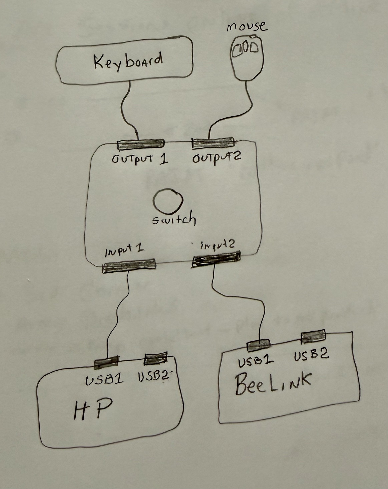
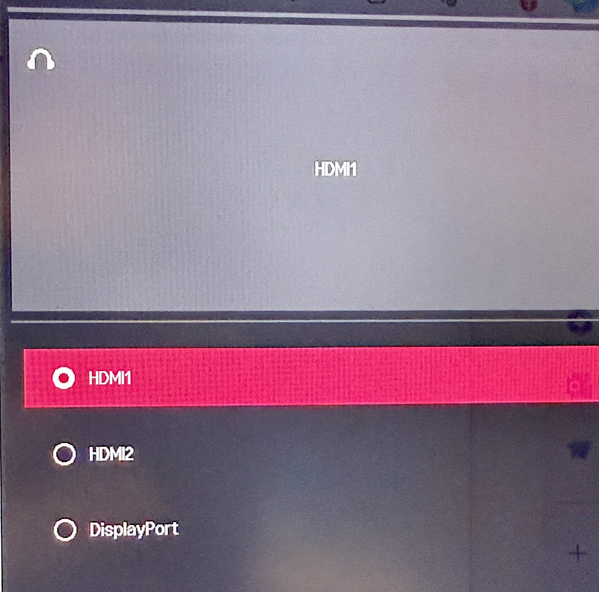

Today's objective was to get Open WebUI, running on Node A (Beelink SER9), reachable from an iPhone on the condo Wi-Fi. It turned into a real troubleshooting chain — the kind that's more instructive after the fact than it felt in the middle of it. Full technical detail lives in the Field Guide, Part 2: Mobile LAN Access — this entry is the narrative version of the same session.
Small but worth noting: a USB keyboard/mouse sharing switch went in between the HP workstation and Node A, so both machines now share one keyboard and mouse. The monitor input still swaps separately between DisplayPort and HDMI. It made hopping back and forth between the two machines during this session a lot less annoying.


The goal: reach Open WebUI from an iPhone. Local Wi-Fi/LAN access first — cellular/Tailscale access deliberately deferred to a later session.
Node A's LAN address: 192.168.88.239. Open WebUI was initially listening only on 127.0.0.1:8080 — loopback only, invisible to anything else on the network.
The running process and its full command line got inspected. Open WebUI Desktop was explicitly launching with --host 127.0.0.1 --port 8080. Attempts to change that in the Desktop app's persistent config didn't stick — the app kept relaunching loopback-only. That part stayed unresolved for the day.
Open WebUI was launched by hand with --host 0.0.0.0 --port 8080 instead. The iPhone still couldn't reliably load it — so binding was necessary, but not sufficient.
Symptoms piled up: HTTPS connection errors, ~60-second timeouts, invalid HTTP requests, WebSocket semaphore timeouts. A plain ping confirmed basic IP connectivity between the two devices, but that alone didn't explain why the app port wasn't reachable.
To isolate the problem, a bare-bones Python HTTP server replaced Open WebUI in the test path. The iPhone still couldn't reach it — which was actually good news, because it ruled out Open WebUI itself and pointed the investigation at Windows networking instead.
Windows had the condo Wi-Fi adapter classified as a Public network, which blocks inbound LAN traffic more aggressively than a Private one. Switching it to Private, then adding an explicit inbound firewall rule for the test port, got the iPhone loading the Python server's directory listing. That was the proof the LAN path itself worked.
While that temporary server was up, the AI Lab Portal loaded successfully on the iPhone straight from its local files — a nice side effect. It means the Portal can be previewed on a phone before anything gets pushed to GitHub or deployed to DreamHost. (With one caveat: that temporary server was exposing the whole user-profile directory tree, not just the Portal folder — worth remembering next time, and only meant to run from inside the Portal folder itself going forward.)
With the network profile fixed, a dedicated firewall rule added for port 8080, and the manually launched server confirmed listening on 0.0.0.0:8080, the iPhone loaded Open WebUI. Server logs showed clean HTTP 200 responses coming from the phone's LAN address.
The real takeaway isn't any single fix — it's that mobile access needed every one of these layers lined up at once:
Miss any one of those and it just doesn't work, with symptoms that don't obviously point back to the missing piece. That's the pattern worth remembering for next time.